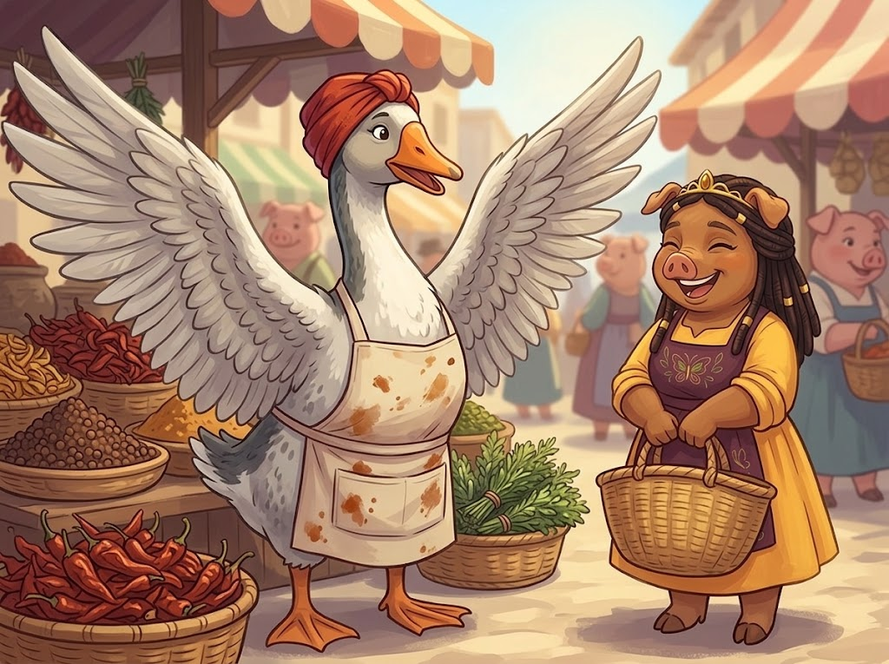
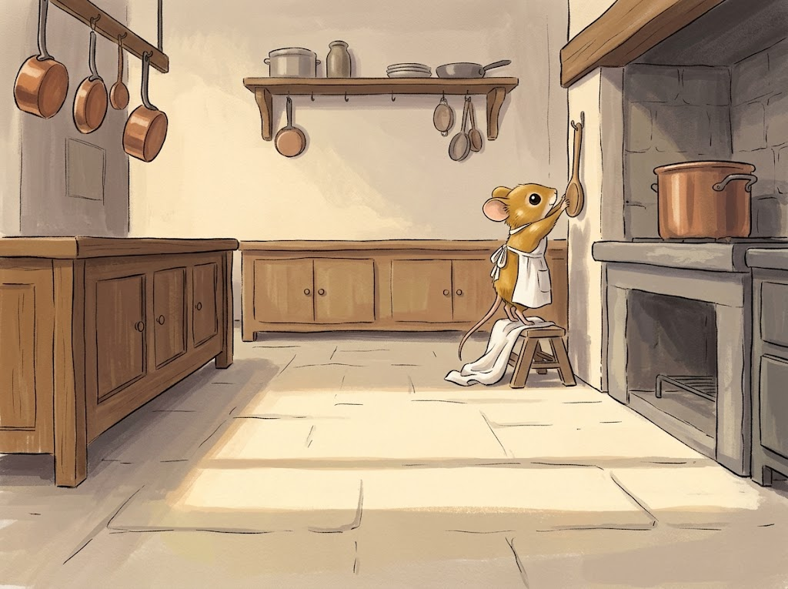
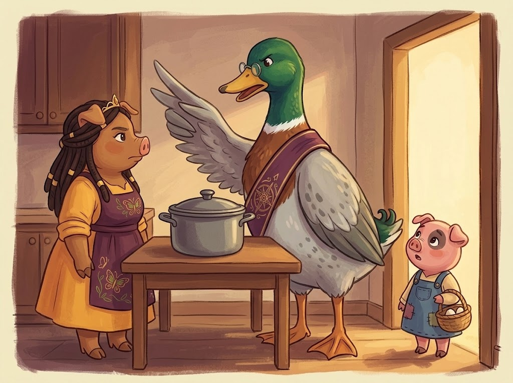
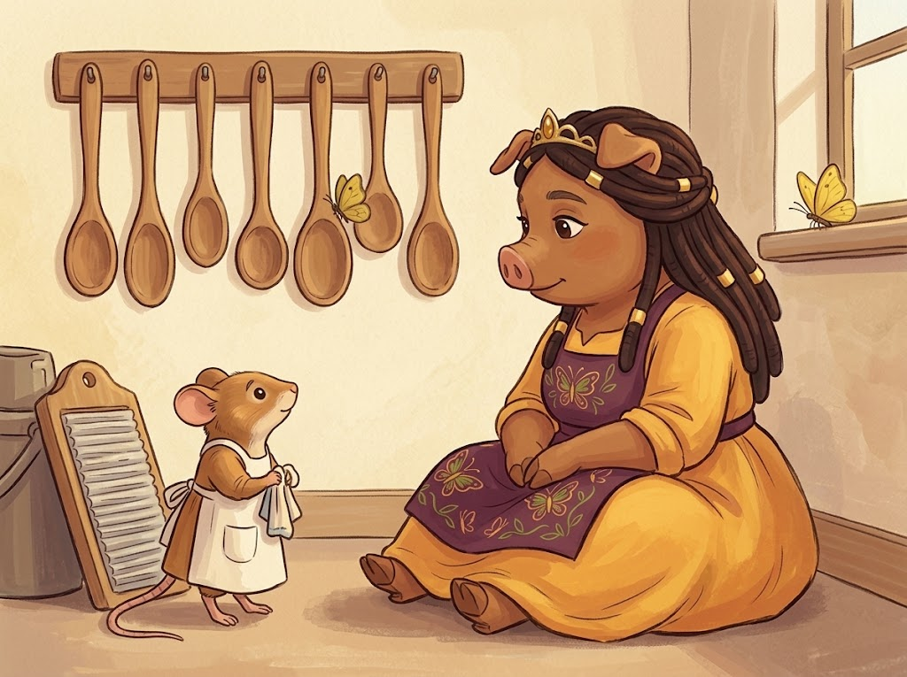
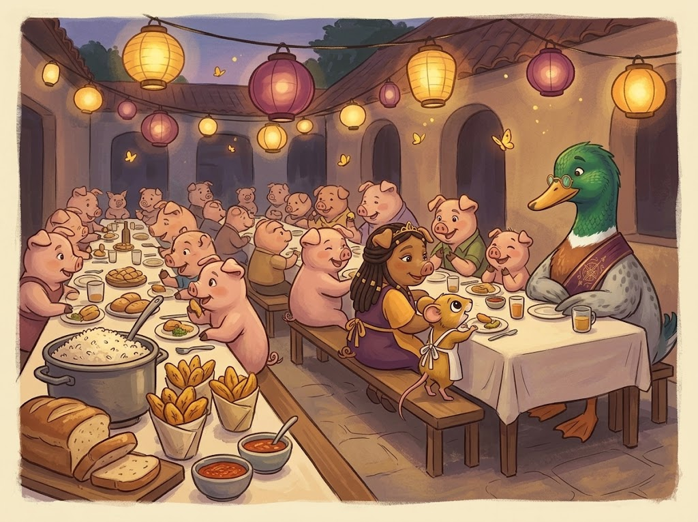

The Kitchen Royal smelled like Thursday, which in Pigglyvale means garlic.
Princess Carolyn had her sleeves pushed past the elbow and her locs tied back with the green cloth she kept for serious work. She was building a sofrito the way her grandmother had built one: peppers first, then onion, then a fistful of culantro, and the garlic last of all so it would not scorch and turn bitter and quietly ruin everything downstream of it. There were eleven days of Fair Week ahead and every one of them would begin from this pot.
Pim the harvest mouse stood on the step stool at her elbow, holding a wooden spoon in both paws like a fishing rod.
“Do I stir now?”
“Not yet.”
“Now?”
“Pim.”
“I am only checking,” said Pim, checking.
There was a thump at the side door. Then a second thump, more thoughtful. Then Thomas the Drake of Snouton came in through the main door instead, as he always did, with the air of a duck who had considered both doors carefully and chosen freely.
“Your Majesty. The schedule.” He set his leather book on the counter and pushed his small round spectacles up his beak. “Fair Week opens Monday. I have written it out in a hand that even I can read.”
“Is Thursday empty?”
“Thursday is gloriously, scandalously empty.”
Carolyn scraped the peppers off the board into the pot, where they hissed and let go of their smell all at once, green and sweet. “Good. Pim, Thursday afternoon you and I are making this properly. Start to finish. Just us.”
Pim went very still, the way small people do when something good happens to them in front of witnesses. “Thursday afternoon,” she repeated, as though writing it somewhere permanent.
That was the first promise, and it cost nothing at all to make.

Marketrow on Tuesday smelled like every good thing at once. Carolyn had come down for allspice and got about forty feet before Auntie Yolanda Plum came out from behind her stall with both wings spread, which is how a goose says stop right there while pretending to say hello.
“Your Majesty. The pepper contest.”
“It is going ahead?”
“It is going ahead if you judge it.” Yolanda leaned in, and her voice dropped to the register geese use for conspiracies. “Last year they let Gus Thornapple judge and he gave the ribbon to a pepper that was, and I say this as a friend of thirty years, a tomato.”
Carolyn laughed. “When?”
“Thursday. Afternoon.”
And here is the thing about the moment that followed, which lasted less than a second and decided the whole week: Carolyn knew Thursday afternoon was spoken for. She knew it the way you know your own name. But Auntie Yolanda had asked her first, before anyone, and was standing there with her wings out and her whole face open, and the word no would have landed in the middle of all that like a dropped plate.
“Of course,” said Carolyn.
She told herself she would move the sofrito lesson to Friday. She fully meant to. She got about nine steps up Marketrow before Bruno “Buckets” Marrow slid out of an alley in front of her, towing a cart with wet paint on the side.
“Majesty! Do not look at it yet.”
“I am looking at it.”
“Then look at it appreciatively.” The otter stood back. The cart said THE MARROW EXPRESS in letters that had run slightly. “Opening Thursday. Fried plantain, three kinds of pepper sauce, and a mango thing I have not finished inventing. I need you to say a few words.”
“Bruno —”
“A few words. Four words. You could say four words in the time it takes to walk past.”
It was true. It was four words. Carolyn said yes to the four words, and Bruno beamed at her with his whole flat face, and she went on up the row feeling like a person who was having a rather good day.
Beatrix Hollyhock caught her outside the bakery, flour to the elbows and a look on her that Carolyn had never once seen there.
“The big oven cracked.”
“Beatrix.”
“Straight up the back wall. Gus says three weeks.” The baker wiped her hands on her apron and did not manage to look at Carolyn while she said the next part. “I have got the whole fair-week bread order and two apprentices and no oven, and yours is the only other one in the kingdom big enough. I would not ask. You know I would not ask.”
“You are asking.”
“I am asking.”
“Then it is yours,” said Carolyn, and meant it entirely, and felt the good clean feeling of being useful to someone who needed it. “When do you want to start?”
“Thursday?”
Nobody in this story wanted anything unreasonable.
Auntie Yolanda wanted her contest judged by somebody who could tell a pepper from a tomato, and she had come to the Princess first out of respect, and would have told you so. Bruno wanted four words because four words were, in his experience, free; he had never in his life sat down and added up other people's minutes, because he had never had to. Beatrix wanted to keep her promises to her customers and her apprentices, and had spent two days working up the nerve to ask at all.
And Carolyn wanted, more than she wanted a free Thursday, for none of them to walk away from her with a smaller face than they had arrived with.
Every one of them was being good. That is generally how it starts.
Thursday arrived the way a wave arrives.
Carolyn was in the bakery at four in the morning with Beatrix, and the two of them got through ninety loaves and a tray of coconut buns before the sun was properly up. She got to Bruno's cart at noon, said her four words, was handed a paper cone of fried plantain, was asked for eleven more words, and said those too. She was halfway up the row toward the pepper tables when she remembered Pim.
She turned around. Pim was standing in the kitchen doorway in her apron, which she had put on some time ago.
“Oh, Pim. Oh, sweetheart.” Carolyn crouched. “The peppers. I have to judge the peppers, and then Beatrix needs the oven again at five, and I —”
“It is alright,” said Pim.
“Next week. I promise. We will do the whole thing.”
“It is alright,” said Pim again, and turned around, and went and stood on the step stool and hung the wooden spoon back on its hook, handle outward, exactly the way she had been taught, taking rather a long time over it.
Carolyn watched her do it. She had the whole of that moment available to her, and she knew what was in it, and she went to the pepper tables anyway, because eleven people were waiting there and only one person was here.

That is the smallest arithmetic in the world, and everybody does it, and it is nearly always wrong.
Thomas found her at the pepper tables at two o'clock and did not like what he saw.
His Princess was gray around the eyes. She was holding a slice of pepper and had been holding it for some while. Behind her the ovens still wanted her at five, and beyond that lay Friday, which he had written out in his own hand and which was worse.
Thomas the Drake of Snouton loved her, which is the beginning of the trouble and not an excuse for it. He walked over to Auntie Yolanda and said, in the low confidential voice of a royal advisor managing a delicate matter:
“Her Majesty is unwell. She will not be able to judge. I would take it as a kindness if you did not mention it about.”
Auntie Yolanda called the contest off in nine minutes. She then mentioned it about, at volume, to every soul on Marketrow, on the grounds that people ought to know why there was no contest.
By four o'clock, the kingdom knew the Princess was ill.
By four fifteen, the kingdom also knew — because Bruno was telling it as a funny story, and it was a funny story — that the Princess had been at the Marrow Express at noon, laughing, with a cone of plantain in her hand.

Yolanda arrived at the Kitchen Royal at five with a covered pot and a face like weather coming in.
“Chicken and rice,” she said, setting it down hard enough to say the rest of it. “For your illness.”
“Auntie —”
“Thirty years I have known you.” The goose's voice was not loud, which was worse. “If you did not want to judge my peppers, Carolyn, you could have said so with your own mouth. You did not have to send a duck.”
The door closed. The kitchen was extremely quiet.
“What did you say to her,” said Carolyn.
Thomas drew himself up, which took a while. “I said you were unwell. Majesty, you were drowning. You had been on your feet since four. I have watched you say yes to this kingdom until there was nothing of you left, and I am not going to stand about with a book under my wing and —”
“You lied about me. In my own kingdom. To my oldest friend.”
“I was protecting you.”
“Did she ask you to?”
They both turned. Fig Bramblewick was standing in the doorway with a basket of eggs on her hip, four years old and entirely unaware that she had just walked into the middle of something.
“Did she ask you to say she was sick?” said Fig again, because nobody had answered her.
Thomas opened his beak. Nothing came out of it. He stood there in the doorway of the Kitchen Royal, an enormous and highly educated bird, and discovered that the whole of his defense had been built on a question he had never once thought to ask.
“No,” he said. “No, small one. She did not.”
“I told Auntie Yolanda you were ill,” said Thomas. “You did not ask me to, and it was not true, and it made you a liar on your own Marketrow by four o'clock. I did it because watching you drown is unbearable to me. That is my reason and it is not an excuse. I took a hard thing out of your hands as though you could not carry it, and that is nearer to an insult than a kindness. I will not speak for you again without asking you first. And when the next hard thing wants saying, I will say it to your face instead of around you.”
Carolyn was quiet for a moment. Then she reached up and took hold of the edge of his wing, which she had been doing since she was small enough to hang off it.
“I forgive you,” she said. “Fully. It is done.”
“Majesty —”
“It is done, Thomas.” She let go and looked at the soup pot for a while. “And you did not put me here. I promised four people the same afternoon and I did it in about ninety seconds, and every single time I said yes I thought I was being kind. I was being comfortable. There is a difference and I have been pretending there is not.”
She untied the green cloth and retied it, which is what she does instead of sighing.
“Right. Auntie Yolanda first, because she deserves it from my own mouth.”
“And then?”
“And then the one that actually matters.”
Auntie Yolanda listened to the whole of it standing in her doorway with her wings folded, which for a goose is roughly a full minute of heroic restraint.
“I was not ill,” Carolyn finished. “I said yes to four things on one Thursday and I could not do them, and instead of telling you that, I let it get fixed around me. You have never once needed me to be perfect for you, Auntie. I am sorry.”
Yolanda's beak worked. “You could have just said Friday.”
“I know.”
“I would have said Friday, then, and that would have been the end of it.” She made a noise like a kettle deciding not to boil. “Bring my pot back. There is nothing wrong with that rice.”
“There has never been anything wrong with that rice.”
“Well. No.”
Pim was scrubbing the board when Carolyn came back to the kitchen. She scrubbed it a good deal harder when she heard the door.
Carolyn sat down on the floor, which put her more or less at mouse height, and which she had learned somewhere along the line was the only honest way to do this.
“Pim. I broke a promise to you today. Then I let you tell me it was alright, and I walked off, because it was easier for me if it was alright.”
The scrubbing stopped.
“It wasn't,” said Pim, to the board. “It wasn't alright. I had my apron on since after lunch.”
“I know. I saw you hang up the spoon.”
“I know you saw.”
“That is the part I am most sorry for,” said Carolyn. “Not the peppers. That part.”
Pim's chin did something complicated. “Alright,” she said, and this time it was a real one, worn down to about the size of a real one.
Two yellow butterflies came in over the sill. One of them went round the room once and settled on the spoon rack, and stayed there.
Nobody in Pigglyvale ever remarks on the butterflies. They only notice.

The sofrito lesson happened on Friday, from start to finish, just the two of them, and took two hours longer than it needed to because Pim wanted to smell everything twice.
They carried the pot out to the Long Table at dusk. Beatrix came with ninety loaves and an apology of her own that nobody required. Bruno arrived towing the cart, which now said MARROW & CO. in letters that had also run. Auntie Yolanda judged the pepper contest herself, gave the ribbon to Gus Thornapple out of pure spite, and Gus was so pleased he had to go and stand behind a wall.
Thomas attempted the side door, on the theory that this time it would be different.
It was not different.
